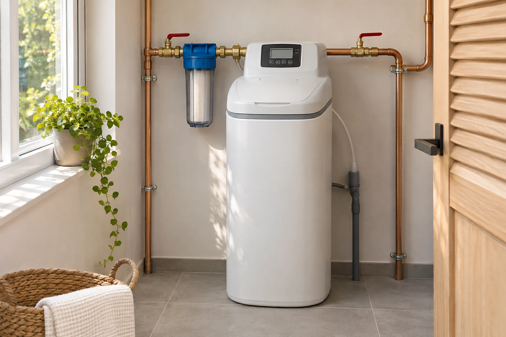

02TRAITEMENT DE L’EAU
Une solution à étudier
Nous proposons des adoucisseurs à sel, le traitement au CO₂ et le traitement UV. Ces procédés sont distincts : nous échangeons avec vous sur l’installation existante et votre demande avant d’aborder les points à examiner pour votre équipement.
Étudier mon besoin